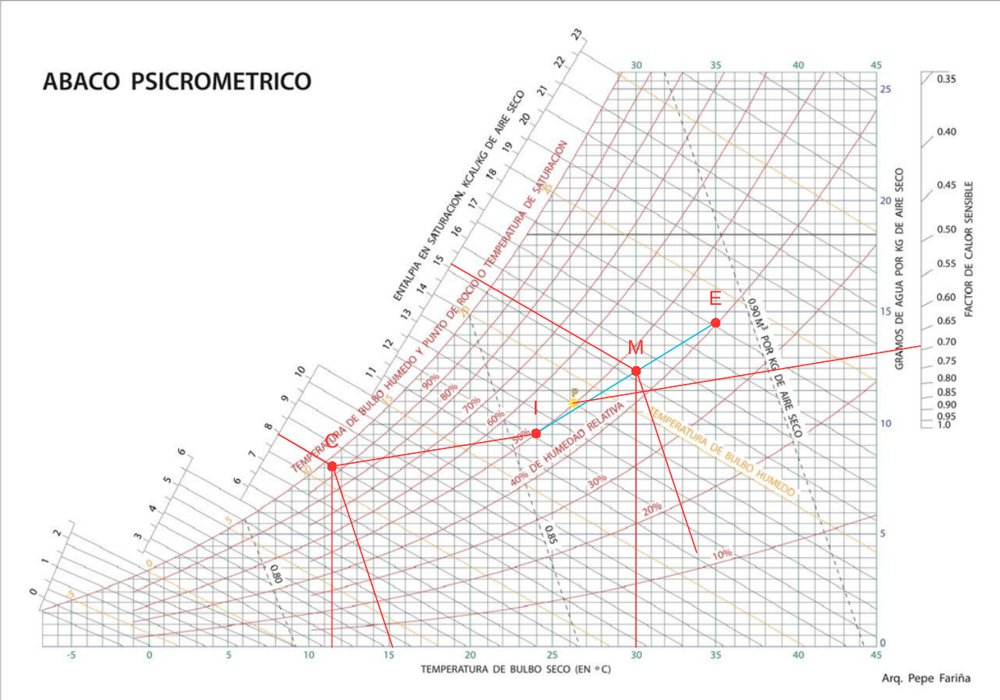

Balance térmico y psicrometría · Vivienda
Verano (refrigeración) · Psicrometría · Invierno (calefacción) · SUM, dúplex y viviendas de 1 y 2 dormitorios
PARTE ABalance térmico de verano
1Condiciones de diseño y datos
Temperaturas
te = 35 °C (HR 40 %) · ti = 24 °C (HR 50 %)
Saltos térmicos (Δt)
muro exterior 11 °C · muro interior 8 °C
Humedad específica
Me − Mi = 2,8 g/kg
Personas
57 kcal/h sensible · 60 kcal/h latente · aire exterior 25 m³/h por persona (50 m³/h en SUM)
Iluminación y equipos
20 W/m² cada uno · 1 W = 0,86 kcal/h
Mayoración
+10 % al calor sensible · +5 % al calor latente
Equipos adoptados
Sistema VRV LG · evaporadoras de pared tipo split STANDAR · condensadoras LG A5UW30GFA2
2Coeficientes utilizados
| Elemento | K (kcal/h·m²·°C) |
|---|
| Ladrillo común 15 cm | 2,30 |
| Vidrio sin protección | 5,00 |
| Carpintería de hierro | 5,19 |
| Constante | Valor |
|---|
| Calor específico del aire (Ce) | 0,24 kcal/kg·°C |
| Calor latente de vaporización (L) | 0,576 kcal/g |
| Peso específico del aire (Pe) | 1,14 kg/m³ |
R: tablas 2 y 3 · I: tabla de radiación a través del vidrio · factores de ocupación y actividad: tablas 5 y 6.
3Ejemplo resuelto · Dúplex 1er piso Sureste · 47 m² · 141 m³ · 4 personas
| Muro | Elemento | K × S × Δt | Qt (kcal/h) |
|---|
| EXT | Ladrillo común 15 cm | 2,30 × 23,88 × 11 | 604,16 |
| EXT | Vidrio sin protección | 5,00 × 4,80 × 11 | 264,00 |
| EXT | Carpintería de hierro | 5,19 × 1,32 × 11 | 75,36 |
| INT | Ladrillo común 15 cm | 2,30 × 30,00 × 8 | 345,00 |
| Qt = K · S · Δt · transmisión total | 1.288,52 |
| Radiación (muro exterior) | Opacos K·S·R · vidrio K·S·I | Qr (kcal/h) |
|---|
| Ladrillo común 15 cm | 2,30 × 23,88 × 16 | 878,80 |
| Vidrio sin protección | 5,00 × 4,80 × 110 | 2.640,00 |
| Carpintería de hierro | 5,19 × 1,32 × 16 | 109,61 |
| Qr total (R = 16 · I = 110) | 3.628,41 |
Aire exterior
V = 12 × 4 / 47 × 25 = 25,53 m³/h
Aire ext. · sensible
Qs = 0,24 × 25,53 × 1,14 × 11 = 76,86 kcal/h
Aire ext. · latente
Ql = 0,576 × 25,53 × 1,14 × 2,8 = 46,86 kcal/h
Personas
4 × 57 = 228 sensible · 4 × 60 = 240 latente
Iluminación · equipos
(47 × 20) × 0,86 = 808,40 + 808,40 kcal/h
Q sensible total
(1.288,52 + 3.628,41 + 76,86 + 228 + 808,40 + 808,40) + 10 % = 7.522,45
Q latente total
(46,86 + 240) + 5 % = 278,80
Q total = Qs + Ql
7.801,25 kcal/h
4Ganancias de calor por local kcal/h
| Local | Orient. | Sup. m² | Pers. | Transm. | Radiación | Aire ext. S | Personas S | Ilum.+Eq. | Qs +10 % | Ql +5 % | Q total |
|---|
| SUM · planta baja | Noroeste | 43,40 | 42 | 839,04 | 971,52 | 728,20 | 2.394,00 | 1.492,96 | 7.068,30 | 3.113,10 | 10.181,40 |
| Dúplex · 1er piso | Sureste | 47 | 4 | 1.288,52 | 3.628,41 | 76,86 | 228,00 | 1.616,80 | 7.522,45 | 278,80 | 7.801,25 |
| Dúplex · 2do piso | Sureste | 47 | 4 | 1.313,15 | 3.017,50 | 76,86 | 228,00 | 1.616,80 | 6.877,50 | 278,80 | 7.156,30 |
| Vivienda 1 dormitorio | Noreste | 56 | 2 | 1.135,28 | 5.278,80 | 32,25 | 114,00 | 1.926,40 | 9.338,70 | 137,20 | 9.475,90 |
| Vivienda 2 dormitorios | Noroeste | 87 | 4 | 1.629,28 | 4.367,90 | 41,50 | 228,00 | 2.992,80 | 10.155,70 | 266,48 | 10.422,18 |
PARTE BPsicrometría de verano
1Procedimiento en el ábaco
- FCS = Qs / (Qs + Ql), del balance térmico
- Punto I (interior): 24 °C · HR 50 %
- Punto E (exterior): 35 °C · HR 40 % · se une E con I
- Recta del FCS: desde el valor de FCS hasta el punto P
- Punto C: paralela desde I hasta la curva de HR 95 % → TBSc, Vec, Ec
- Peso del aire: W = Qs / [0,25 × (TBSi − TBSc)]
- Caudal de mando: CAM = W × Vec
- Aire exterior: CAE = personas × 25 m³/h (mínimo 20 % del CAM)
- Aire recirculado: CAR = CAM − CAE
- Punto M: sobre E–I, según la proporción CAE / CAR → TBSm, Em
- Calor a sustraer: R = W × (Em − Ec)
- Equipo: TR = R / 3024 · kW = R / 860 · BTU = R × 3,96
2Ejemplo · SUM FCS = 7.068,3 / 10.181,4 = 0,694

Punto C
TBS 11,4 °C · HR 95 % · Vec 0,815 · Ec 7,9
Peso del aire
W = 7.068,3 / (0,25 × 12,6) = 2.243,9 kg/h
CAM
2.243,9 × 0,815 = 1.828,7 m³/h
CAE
42 × 25 = 1.050 m³/h 57 % del CAM · verifica
CAR
1.828,7 − 1.050 = 778,7 m³/h
Punto M
TBS 30 °C · HR 46 % · Vem 0,875 · Em 15,2
R
2.243,9 × (15,2 − 7,9) = 16.380,47 kcal/h
Equipo
5,42 TR · 19,04 kW · 64.866,6 BTU
3Resultados por local
| Local | FCS | TBS C | Ec | W kg/h | CAM m³/h | CAE m³/h | CAR m³/h | TBS M | Em | R kcal/h | TR | kW |
|---|
| SUM · planta baja | 0,694 | 11,4 °C | 7,9 | 2.243,90 | 1.828,70 | 1.050,00 | 778,70 | 30 °C | 15,2 | 16.380,47 | 5,42 | 19,04 |
| Dúplex · 1er piso | 0,964 | 14,6 °C | 9,9 | 3.007,78 | 2.496,39 | 499,27 | 1.997,12 | 26,1 °C | 13,1 | 9.624,89 | 3,18 | 11,18 |
| Dúplex · 2do piso | 0,961 | 14,1 °C | 9,9 | 2.926,59 | 2.429,06 | 485,81 | 1.943,25 | 26,1 °C | 13,1 | 9.365,08 | 3,09 | 10,88 |
| Vivienda 1 dormitorio | 0,98 | 14,6 °C | 9,9 | 3.973,90 | 3.278,47 | 655,60 | 2.622,87 | 26 °C | 12,9 | 11.921,70 | 3,94 | 13,85 |
| Vivienda 2 dormitorios | 0,97 | 14,9 °C | 10 | 1.116,01 | 926,29 | 185,30 | 740,90 | 26 °C | 12,9 | 3.236,40 | 1,07 | 8,5 |
Ec y Em en kcal/kg. En dúplex y viviendas el CAE por personas no llega al 20 % del CAM y se adopta ese mínimo.
PARTE CBalance térmico de invierno
1Condiciones de diseño y coeficientes
Salto térmico (Δt)
20 °C · altura de locales 2,60 m · 1 renovación por hora
Coeficientes K
ladrillo 2,30 · vidrio 2,80 · puerta 5,19 · piso y techo 1,50
Transmisión
Q = S × K × Δt piso solo en 1er piso · techo solo en último piso
Orientación
Qor = Qtr × % · N, NE, NO 0 % · E, O 5 % · S, SE, SO 10 %
Ventilación
Qv = 0,3 × RH × Vol × Δt 0,3 ≈ 0,24 × 1,19
Ganancias
personas 55 kcal/h c/u · iluminación y equipos W × 0,86
Balance
Q = pérdidas − ganancias
2Ejemplo resuelto · Dúplex PB 1er piso 49 m² · h 2,60 m · 127,4 m³ · 4 personas
| Elemento | Orient. | S × K × Δt | Q (kcal/h) | % | Qor |
|---|
| V1 Ventana | SO | (1,60 × 0,60) × 2,8 × 20 | 53,76 | 10 | 5,38 |
| V4 Ventana | SE | (0,90 × 0,60) × 2,8 × 20 | 30,24 | 10 | 3,02 |
| V7 Ventana | SE | (2,50 × 0,60) × 2,8 × 20 | 84,00 | 10 | 8,40 |
| V10 Ventana | NE | (2,70 × 2,40) × 2,8 × 20 | 362,88 | 0 | 0,00 |
| P1 Puerta | SO | (0,80 × 2,10) × 5,19 × 20 | 174,39 | 10 | 17,44 |
| M1 Muro ext. | SO | (4,75 × 2,60 − V1 − P1) × 2,3 × 20 | 446,66 | 10 | 44,67 |
| M6 Muro ext. | SE | (3,10 × 2,60 − V4) × 2,3 × 20 | 345,92 | 10 | 34,59 |
| M11 Muro ext. | SE | (5,10 × 2,60 − V7) × 2,3 × 20 | 540,96 | 10 | 54,10 |
| M16 Muro ext. | SE | (2,90 × 2,60) × 2,3 × 20 | 346,84 | 10 | 34,68 |
| M20 Muro ext. | SE | (2,00 × 2,60) × 2,3 × 20 | 239,20 | 10 | 23,92 |
| M19 Muro ext. | NE | (3,80 × 2,60 − V10) × 2,3 × 20 | 440,68 | 0 | 0,00 |
| Piso | terreno | 49 × 1,5 × 20 | 1.470,00 | — | — |
| Transmisión · orientación | 4.535,53 | | 226,20 |
Ventilación
Qv = 0,3 × 1 × 127,4 × 20 = 764,40 kcal/h
Pérdidas
4.535,53 + 226,20 + 764,40 = 5.526,13 kcal/h
Ganancias
personas 4 × 55 = 220 · iluminación 90 W × 0,86 = 77,40 · equipos 490 W × 0,86 = 421,40 → 718,80
Calor a reponer
Q = 5.526,13 − 718,80 = 4.807,33 kcal/h
3Pérdidas por transmisión kcal/h
| Caso | Muros | Ventanas | Puertas | Piso | Techo | Qtr | Sup. m² | Vol. m³ |
|---|
| Dúplex PB · 1er piso | 2.360,26 | 530,88 | 174,39 | 1.470,00 | — | 4.535,53 | 49 | 127,40 |
| Dúplex PB · intermedios | 2.360,26 | 530,88 | 174,39 | — | — | 3.065,53 | 49 | 127,40 |
| Dúplex PA · último piso | 2.605,44 | 468,72 | 174,39 | — | 1.470,00 | 4.718,55 | 49 | 127,40 |
| Dúplex PA · intermedios | 2.605,44 | 468,72 | 174,39 | — | — | 3.248,55 | 49 | 127,40 |
| 1 dormitorio · 1er y último piso | 1.460,65 | 682,08 | 337,88 | 1.680,00 | — | 4.160,61 | 56 | 145,60 |
| 1 dormitorio · intermedios | 1.460,65 | 682,08 | 337,88 | — | — | 2.480,61 | 56 | 145,60 |
| 2 dormitorios · 1er y último piso | 2.933,88 | 1.036,76 | 174,39 | 2.610,00 | — | 6.755,03 | 87 | 226,20 |
| 2 dormitorios · intermedios | 2.933,88 | 1.036,76 | 174,39 | — | — | 4.145,03 | 87 | 226,20 |
| SUM · planta baja | 2.448,12 | 682,08 | 174,39 | 1.350,00 | — | 4.654,59 | 45 | 117,00 |
4Balance por caso y total del edificio kcal/h
| Caso | Transm. | Orient. | Ventil. | Pérdidas | Ganancias | Q por piso | Pisos | Q total |
|---|
| Dúplex PB · 1er piso | 4.535,53 | 226,20 | 764,40 | 5.526,13 | 718,80 | 4.807,33 | × 1 | 4.807,33 |
| Dúplex PB · intermedios | 3.065,53 | 226,20 | 764,40 | 4.056,13 | 718,80 | 3.337,33 | × 2 | 6.674,65 |
| Dúplex PA · último piso | 4.718,55 | 184,92 | 764,40 | 5.667,88 | 827,00 | 4.840,87 | × 1 | 4.840,87 |
| Dúplex PA · intermedios | 3.248,55 | 184,92 | 764,40 | 4.197,88 | 827,00 | 3.370,88 | × 2 | 6.741,75 |
| 1 dormitorio · 1er y último piso | 4.160,61 | 92,40 | 873,60 | 5.126,61 | 660,40 | 4.466,21 | × 2 | 8.932,42 |
| 1 dormitorio · intermedios | 2.480,61 | 92,40 | 873,60 | 3.446,61 | 660,40 | 2.786,21 | × 3 | 8.358,63 |
| 2 dormitorios · 1er y último piso | 6.755,03 | 154,42 | 1.357,20 | 8.266,65 | 1.114,40 | 7.152,25 | × 2 | 14.304,50 |
| 2 dormitorios · intermedios | 4.145,03 | 154,42 | 1.357,20 | 5.656,65 | 1.114,40 | 4.542,25 | × 3 | 13.626,75 |
| SUM · planta baja | 4.654,59 | 165,50 | 702,00 | 5.522,09 | 744,40 | 4.777,69 | × 1 | 4.777,69 |
| Total edificio (todos los pisos) | 73.064,58 |
5Caldera
Q total edificio
73.064,58 kcal/h
suma de todos los pisos
Q total + 30 %
94.984,08 kcal/h
73.064,58 × 1,3
Caldera adoptada
XP 120 Peisa
caldera comercial
PARTE DFichas por local · verano, psicrometría e invierno
Cada ficha muestra la planta del local (muro exterior en rojo, interior en verde), su ábaco psicrométrico con los puntos I, E, C y M, y los resultados de los tres cálculos. Valores en kcal/h salvo indicación.
01SUM · planta bajaOrientación Noroeste · 43,40 m² · 130,20 m³ · 42 personas
Puntos del ábaco
| Punto | TBS °C | HR % | Ve m³/kg | E kcal/kg |
|---|
| I | 24 | 50 | — | — |
| E | 35 | 40 | — | — |
| C | 11,4 | 95 | 0,815 | 7,9 |
| M | 30 | 46 | 0,875 | 15,2 |
Psicrometría
| FCS | 0,694 |
| W = Qs / 0,25 Δt | 2.243,90 kg/h |
| CAM = W × Vec | 1.828,70 m³/h |
| CAE · CAR | 1.050,00 · 778,70 |
| R = W (Em − Ec) | 16.380,47 |
| TR · kW | 5,42 · 19,04 |
| BTU | 64.866,60 |
Verano · kcal/h
| Transmisión | 839,04 |
| Radiación (R = 22) | 971,52 |
| Aire ext. (241,96 m³/h) S · L | 728,20 · 444,86 |
| Personas S · L | 2.394,00 · 2.520,00 |
| Iluminación + equipos | 1.492,96 |
| Qs +10 % · Ql +5 % | 7.068,30 · 3.113,10 |
| Q total | 10.181,40 |
Invierno · kcal/h
| planta baja |
|---|
| Transmisión | 4.654,59 |
| Orientación | 165,50 |
| Ventilación | 702,00 |
| Pérdidas | 5.522,09 |
| Ganancias | 744,40 |
| Q a reponer | 4.777,69 |
| Cantidad de pisos | × 1 |
02Dúplex · 1er pisoOrientación Sureste · 47 m² · 141 m³ · 4 personas
Puntos del ábaco
| Punto | TBS °C | HR % | Ve m³/kg | E kcal/kg |
|---|
| I | 24 | 50 | — | — |
| E | 35 | 40 | — | — |
| C | 14,6 | 95 | 0,83 | 9,9 |
| M | 26,1 | 49 | 0,865 | 13,1 |
Psicrometría
| FCS | 0,964 |
| W = Qs / 0,25 Δt | 3.007,78 kg/h |
| CAM = W × Vec | 2.496,39 m³/h |
| CAE · CAR | 499,27 · 1.997,12 |
| R = W (Em − Ec) | 9.624,89 |
| TR · kW | 3,18 · 11,18 |
| BTU | 38.114,56 |
Verano · kcal/h
| Transmisión | 1.288,52 |
| Radiación (R = 16 · I = 110) | 3.628,41 |
| Aire ext. (25,53 m³/h) S · L | 76,86 · 46,86 |
| Personas S · L | 228,00 · 240,00 |
| Iluminación + equipos | 1.616,80 |
| Qs +10 % · Ql +5 % | 7.522,45 · 278,80 |
| Q total | 7.801,25 |
Invierno · kcal/h
| 1er piso | intermedios |
|---|
| Transmisión | 4.535,53 | 3.065,53 |
| Orientación | 226,20 | 226,20 |
| Ventilación | 764,40 | 764,40 |
| Pérdidas | 5.526,13 | 4.056,13 |
| Ganancias | 718,80 | 718,80 |
| Q a reponer | 4.807,33 | 3.337,33 |
| Cantidad de pisos | × 1 | × 2 |
03Dúplex · 2do pisoOrientación Sureste · 47 m² · 141 m³ · 4 personas
Puntos del ábaco
| Punto | TBS °C | HR % | Ve m³/kg | E kcal/kg |
|---|
| I | 24 | 50 | — | — |
| E | 35 | 40 | — | — |
| C | 14,1 | 95 | 0,83 | 9,9 |
| M | 26,1 | 49 | 0,865 | 13,1 |
Psicrometría
| FCS | 0,961 |
| W = Qs / 0,25 Δt | 2.926,59 kg/h |
| CAM = W × Vec | 2.429,06 m³/h |
| CAE · CAR | 485,81 · 1.943,25 |
| R = W (Em − Ec) | 9.365,08 |
| TR · kW | 3,09 · 10,88 |
| BTU | 37.085,71 |
Verano · kcal/h
| Transmisión | 1.313,15 |
| Radiación (R = 16 · I = 110) | 3.017,50 |
| Aire ext. (25,53 m³/h) S · L | 76,86 · 46,86 |
| Personas S · L | 228,00 · 240,00 |
| Iluminación + equipos | 1.616,80 |
| Qs +10 % · Ql +5 % | 6.877,50 · 278,80 |
| Q total | 7.156,30 |
Invierno · kcal/h
| último piso | intermedios |
|---|
| Transmisión | 4.718,55 | 3.248,55 |
| Orientación | 184,92 | 184,92 |
| Ventilación | 764,40 | 764,40 |
| Pérdidas | 5.667,88 | 4.197,88 |
| Ganancias | 827,00 | 827,00 |
| Q a reponer | 4.840,87 | 3.370,88 |
| Cantidad de pisos | × 1 | × 2 |
04Vivienda 1 dormitorioOrientación Noreste · 56 m² · 168 m³ · 2 personas
Puntos del ábaco
| Punto | TBS °C | HR % | Ve m³/kg | E kcal/kg |
|---|
| I | 24 | 50 | — | — |
| E | 35 | 40 | — | — |
| C | 14,6 | 95 | 0,825 | 9,9 |
| M | 26 | 46 | 0,865 | 12,9 |
Psicrometría
| FCS | 0,98 |
| W = Qs / 0,25 Δt | 3.973,90 kg/h |
| CAM = W × Vec | 3.278,47 m³/h |
| CAE · CAR | 655,60 · 2.622,87 |
| R = W (Em − Ec) | 11.921,70 |
| TR · kW | 3,94 · 13,85 |
| BTU | 47.209,90 |
Verano · kcal/h
| Transmisión | 1.135,28 |
| Radiación (R = 18 · I = 110) | 5.278,80 |
| Aire ext. (10,70 m³/h) S · L | 32,25 · 19,70 |
| Personas S · L | 114,00 · 120,00 |
| Iluminación + equipos | 1.926,40 |
| Qs +10 % · Ql +5 % | 9.338,70 · 137,20 |
| Q total | 9.475,90 |
Invierno · kcal/h
| 1er y último piso | intermedios |
|---|
| Transmisión | 4.160,61 | 2.480,61 |
| Orientación | 92,40 | 92,40 |
| Ventilación | 873,60 | 873,60 |
| Pérdidas | 5.126,61 | 3.446,61 |
| Ganancias | 660,40 | 660,40 |
| Q a reponer | 4.466,21 | 2.786,21 |
| Cantidad de pisos | × 2 | × 3 |
05Vivienda 2 dormitoriosOrientación Noroeste · 87 m² · 261 m³ · 4 personas
Puntos del ábaco
| Punto | TBS °C | HR % | Ve m³/kg | E kcal/kg |
|---|
| I | 24 | 50 | — | — |
| E | 35 | 40 | — | — |
| C | 14,9 | 95 | 0,83 | 10 |
| M | 26 | 46 | 0,865 | 12,9 |
Psicrometría
| FCS | 0,97 |
| W = Qs / 0,25 Δt | 1.116,01 kg/h |
| CAM = W × Vec | 926,29 m³/h |
| CAE · CAR | 185,30 · 740,90 |
| R = W (Em − Ec) | 3.236,40 |
| TR · kW | 1,07 · 8,5 |
| BTU | 12.816,44 |
Verano · kcal/h
| Transmisión | 1.629,28 |
| Radiación (R = 22 · I = 110) | 4.367,90 |
| Aire ext. (13,79 m³/h) S · L | 41,50 · 25,35 |
| Personas S · L | 228,00 · 240,00 |
| Iluminación + equipos | 2.992,80 |
| Qs +10 % · Ql +5 % | 10.155,70 · 266,48 |
| Q total | 10.422,18 |
Invierno · kcal/h
| 1er y último piso | intermedios |
|---|
| Transmisión | 6.755,03 | 4.145,03 |
| Orientación | 154,42 | 154,42 |
| Ventilación | 1.357,20 | 1.357,20 |
| Pérdidas | 8.266,65 | 5.656,65 |
| Ganancias | 1.114,40 | 1.114,40 |
| Q a reponer | 7.152,25 | 4.542,25 |
| Cantidad de pisos | × 2 | × 3 |